官网
github：https://github.com/kubernetes/kubernetes
official-website：https://kubernetes.io/
简介
官方说明：Kubernetes 是用于自动部署，扩展和管理容器化应用程序的开源系统。
官方说明：Kubernetes, also known as K8s, is an open source system for managing containerized applications across multiple hosts. It provides basic mechanisms for deployment, maintenance, and scaling of applications.
Kubernetes builds upon a decade and a half of experience at Google running production workloads at scale using a system called Borg, combined with best-of-breed ideas and practices from the community.
Kubernetes is hosted by the Cloud Native Computing Foundation (CNCF). If your company wants to help shape the evolution of technologies that are container-packaged, dynamically scheduled, and microservices-oriented, consider joining the CNCF. For details about who’s involved and how Kubernetes plays a role, read the CNCF announcement.
Kubeadm方式部署
1. 准备
a) 禁用swap虚拟内存
原因：https://github.com/kubernetes/kubernetes/issues/53533
1 | # 查看默认是否开启swap虚拟内存，swap端不为0则说明开启 |
结果截图：
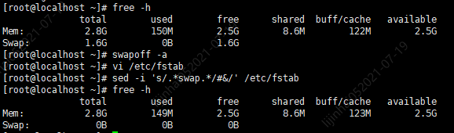
b) 禁用selinux
原因：（https://kubernetes.io/docs/setup/production-environment/tools/kubeadm/install-kubeadm/）
Setting SELinux in permissive mode by runningsetenforce 0andsed …effectively disables it. This is required to allow containers to access the host filesystem, which is needed by pod networks for example. You have to do this until SELinux support is improved in the kubelet.
1 | # 查看默认是否已关闭 |
结果截图：
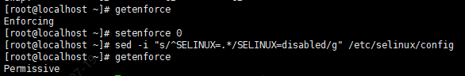
c) 禁用防火墙（firewall）
原因：（https://kubernetes.io/docs/setup/production-environment/tools/kubeadm/install-kubeadm/）
Theiptablestooling can act as a compatibility layer, behaving like iptables but actually configuring nftables. This nftables backend is not compatible with the current kubeadm packages: it causes duplicated firewall rules and breakskube-proxy.
1 | systemctl stop firewalld |
结果截图：
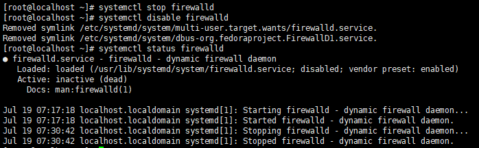
d) 允许 iptables 检查桥接流量
说明：（https://kubernetes.io/docs/setup/production-environment/tools/kubeadm/install-kubeadm/）
Make sure that the br_netfilter module is loaded. This can be done by running lsmod | grep br_netfilter. To load it explicitly call sudo modprobe br_netfilter.
As a requirement for your Linux Node’s iptables to correctly see bridged traffic, you should ensure net.bridge.bridge-nf-call-iptables is set to 1 in your sysctl config, e.g.
1 | cat <<EOF | sudo tee /etc/modules-load.d/k8s.conf |
结果截图：
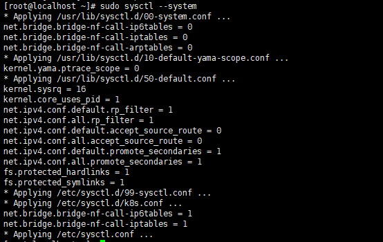
e) 安装Docker
略
f) 配置Docker的Cgroup驱动程序
说明：https://kubernetes.io/zh/docs/setup/production-environment/container-runtimes/#docker
Docker中默认的Cgroup驱动程序为cgroupfs，和Kubelet默认的systemd不一致，将会导致Kubelet安装时报错，所以修改Docker的Cgroup驱动程序为systemd。
1 | vi /etc/docker/daemon.json |
添加以下内容
1 | { |
结果截图：
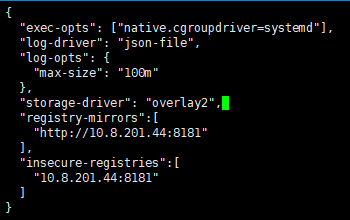
1 | # 重启Docker |
g) 配置Kubernetes的YUM源
YUM默认源是没有Kubernetes相关组件的软件的（Kubeadm、Kubectl、Kubelet），所以需要配置Kubernetes的YUM源
1 | cat << EOF > /etc/yum.repos.d/kubernetes.repo |
h) 查看可安装的Kuberadm、Kubelet、Kubectl版本
1 | yum list kubeadm --showduplicates |
2. 所有节点安装Kubeadm、Kubelet、Kubectl
1 | # 安装最新版本 |
结果截图：
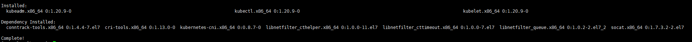
3. 所有节点配置开启自启动及服务启动
1 | systemctl enable kubelet |
结果截图：
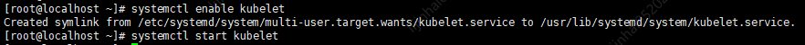
3. Master节点初始化
1 | kubeadm init --apiserver-advertise-address=192.168.10.8 \ |
结果截图：
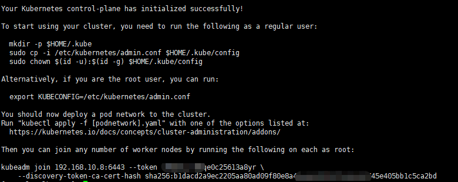
1 | # 按照提示复制对应配置文件 |
4. Work节点初始化
1 | kubeadm join 192.168.10.8:6443 \ |
结果截图：
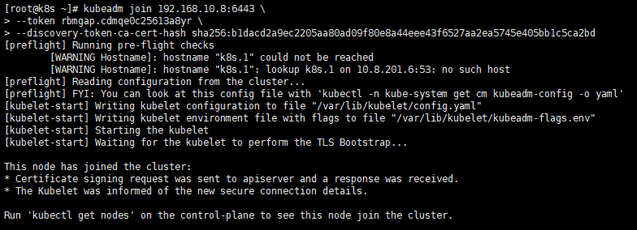
5. Master查看节点信息
集群节点当前处于NotReady状态，原因是coredns服务还没启动成功，而coredns服务依赖Kubernetes集群中的网络插件，常用的网络插件为Flannel、Calico。
1 | kubectl get node -owide |
结果截图：
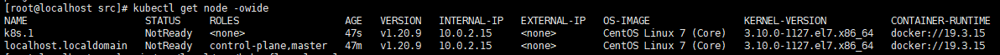
6. Master节点配置网络插件（Flannel）
说明
官方地址：https://github.com/flannel-io/flannel
网络插件只需要安装一个即可，即安装了Flannel就不需要安装Calico了。
下载并修改服务配置
1 | # 下载Flannel部署YAML文件 |
1 | # 修改其中的net-conf.json中的Network属性，改为初始化命令中的pod-network-cidr参数 |
部署服务
1 | # 部署网络插件Flannel服务 |
结果截图：
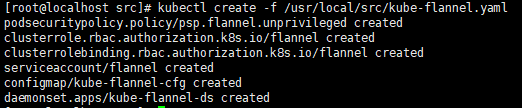
查看结果
1 | # 定时查看Kubernetes集群中pod运行状态，若全部处于Running状态则表明网络插件Flannel部署成功了 |
结果截图：
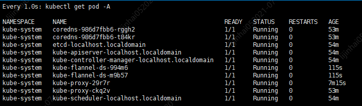
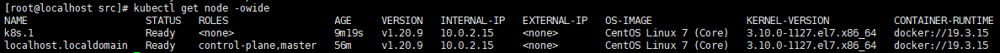
7. Master节点配置网络插件（Calico）
说明
官方地址：https://www.tigera.io/project-calico/
网络插件只需要安装一个即可，即安装了Calico就不需要安装Flannel了。
下载并修改服务配置
1 | # 下载calico部署YAML文件 |
1 | # 修改其中的cidr属性，改为初始化命令中的pod-network-cidr参数 |
部署服务
1 | # 部署网络插件Calico服务 |
结果截图：
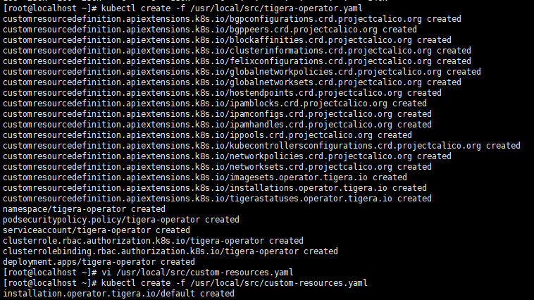
查看结果
1 | # 定时查看Kubernetes集群中pod运行状态，若全部处于Running状态则表明网络插件Calico部署成功了 |
结果截图：
8. Master节点配置网络插件（Calico）(方式2)
说明
官方地址：https://www.tigera.io/project-calico/
网络插件只需要安装一个即可，即安装了Calico就不需要安装Flannel了。
此方式关键在于直接使用一个配置文件即可
下载并修改服务配置
1 | # 下载Calico部署YAML文件 |
1 | # 修改其中的CALICO_IPV4POOL_CIDR环境变量（默认是被注释的了），改为初始化命令中的pod-network-cidr参数 |
部署服务
1 | # 部署网络插件Calico服务 |
结果截图：
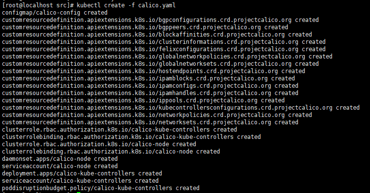
查看结果
1 | # 定时查看Kubernetes集群中pod运行状态，若全部处于Running状态则表明网络插件Calico部署成功了 |
结果截图：
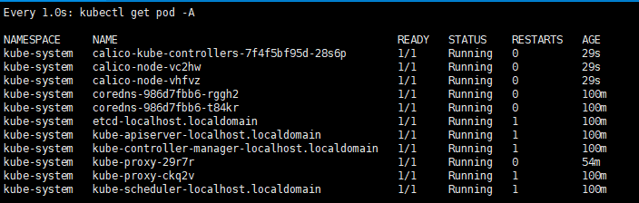
(•̀ᴗ•́)و ̑̑